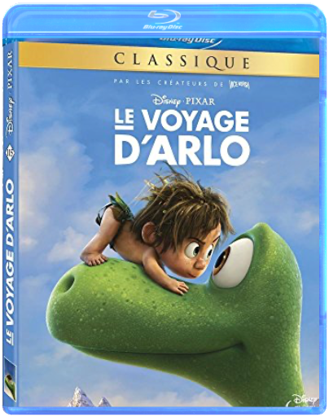
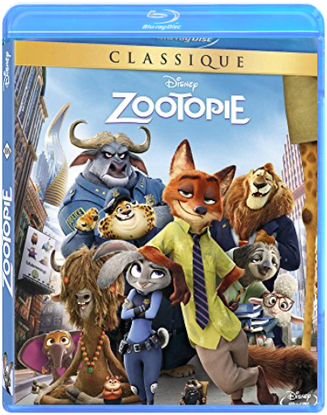

walt disney, 98 : la princesse et la grenouillewalt disney walt disney, 98 : la princesse et la grenouillewalt disney  Sur les bords du Mississippi, dans les années 20, la Nouvelle-Orléans vibre au son du jazz et de la romance. Pourtant, la belle Tiana n'a pas une minute a perdre en rèvant a l'amour. Un séduisant jeune prince, Naveen, vient d'arriver en ville, attiré par sa passion du jazz. Sa richesse et son rang attirent le malfaisant Dr Facilier, un sorcier qui pratique la magie noire. Ne parvenant pas a profiter de la fortune du prince, Facilier se venge, et le transforme en grenouille. Naveen persuade Tiana de lui donner un baiser pour qu'il retrouve sa forme humaine. Mais le résultat n'est pas celui espéré : c'est la jeune fille qui est a son tour métamorphosée en batracienâ?ŠÂ  walt disney, 100 : toy story 3walt disney walt disney, 100 : toy story 3walt disney Les créateurs des très populaires films Toy Story ouvrent à nouveau le coffre à jouets et invitent les spectateurs à retrouver le monde délicieusement magique de Woody, Buzz et leurs amis. Woody et Buzz savaient bien que leur cher Andy allait grandir un jour, mais que faire lorsque ce jour est arrivé ' Dans ce troisième chapitre, Andy se prépare à partir pour l'université, et ses fidèles amis les jouets se posent beaucoup de questions quant à leur avenir. Lee Unkrich (coréalisateur de Toy Story 2 et du Monde de Nemo) réalise ce film très attendu, et Michael Arndt, le scénariste oscarisé de Little Miss Sunshine, apporte son talent unique et sa sensibilité pleine d'humour à l'histoire. walt disney, 115 : le voyage d'arlowalt disney Blu-ray LE VOYAGE D'ARLO - Fabricant : AUCUNE - Code EAN : 8717418463472 walt disney, 116 : zootopiewalt disney BLU-RAY Zootopie - Fabricant : AUCUNE - Code EAN : 8717418463731  walt disney, 120 : cocowalt disney walt disney, 120 : cocowalt disney In Disney/Pixar's vibrant tale of family, fun and adventure, an aspiring young musician named Miguel (voice of newcomer Anthony Gonzalez) embarks on an extraordinary journey to the magical land of his ancestors. There, the charming trickster Héctor (voice of Gael Garci a Bernal) becomes an unexpected friend who helps Miguel uncover the mysteries behind his family s stories and traditions. |


 Made with Delicious Library
Made with Delicious LibraryNancy, State zipflap congrotus delicious library Thomas, Julien